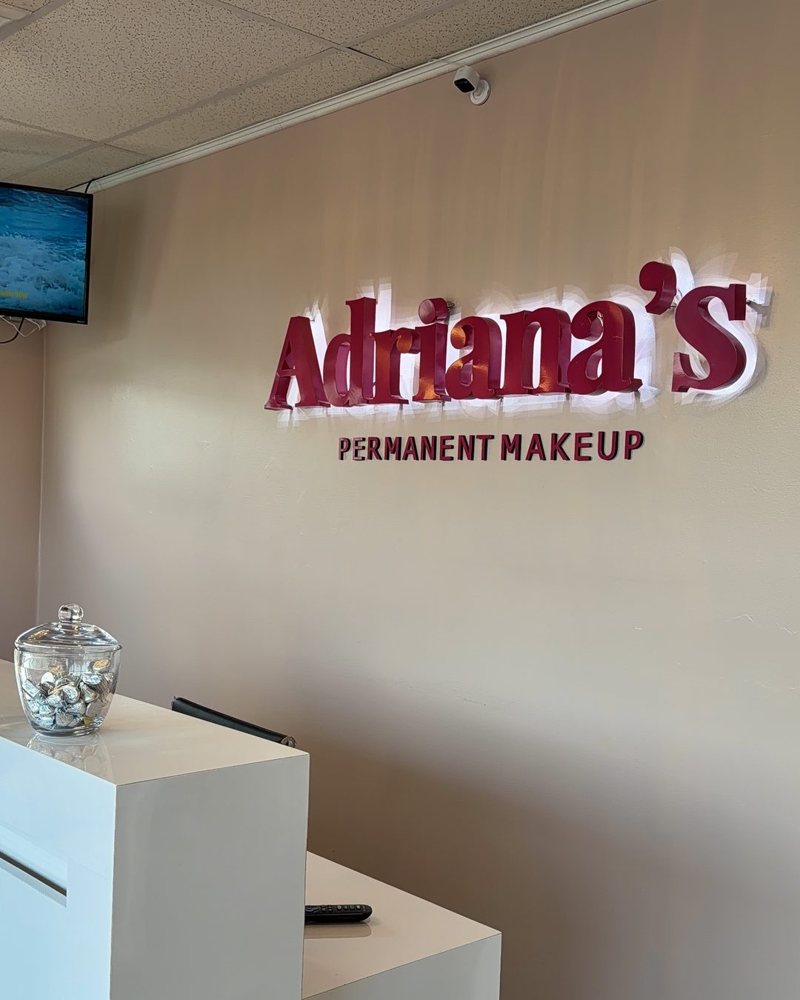
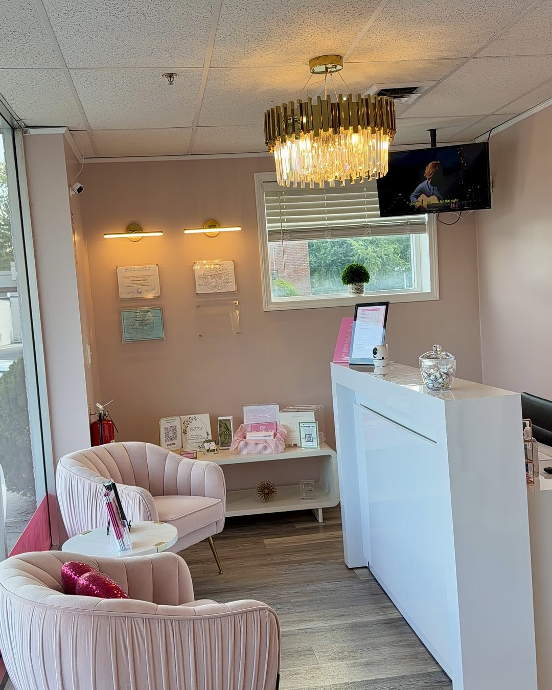
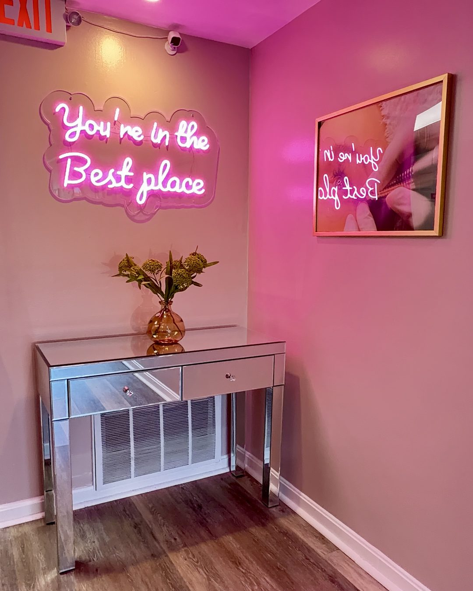

Permanent Makeup in Wilmington, MA
Permanent makeup in Wilmington, MA restores natural-looking brows, lips, and eyeliner definition, with the perfecting touch-up included 6 to 8 weeks after your first visit. Master Permanent Makeup Artist Adriana Souza Santos treats clients at 211 Lowell Street, Suite F, on Route 129 near the I-93 interchange.
- 20+
- Years in the industry
- 5,000+
- Procedures performed
- 300+
- Students trained
- EN & PT
- Consultations
Adriana's Permanent Makeup in Wilmington, MA is a permanent makeup studio at 211 Lowell Street, Suite F, on Route 129 in the center of town, run by Master Permanent Makeup Artist Adriana Souza Santos of Adriana Beauty Services, Inc.
Who Is the Wilmington Studio Right For, and Who Should Book Elsewhere?
The Wilmington, MA studio fits residents of Wilmington, Reading, Woburn, Burlington, Tewksbury, Billerica, and North Reading who want brow, lip, or eyeliner permanent makeup from a Master Artist with 20+ years in the industry. It is not a fit for anyone under 18, pregnant, breastfeeding, or currently using isotretinoin.
- Good fit: Route 129 corridor clients wanting a consultation before choosing a technique
- Good fit: Portuguese-speaking clients wanting the consultation in Portuguese
- Good fit: existing clients due for a yearly touch-up
- Not a fit: anyone pregnant, breastfeeding, or under 18, at either studio
- Not yet: isotretinoin, blood thinners, autoimmune, or keloid history without clearance. See the contraindications guide
How Does a Permanent Makeup Appointment Work at the Wilmington Studio?
A Wilmington, MA appointment starts with a consultation and design mapping, moves into the procedure itself, and ends with written aftercare instructions. The perfecting touch-up is scheduled 6 to 8 weeks later, once healing is complete, and is included in the original price, not billed as a separate visit.
- Consultation and health-history intake
- Brow, lip, or eyeliner mapping matched to your features
- The procedure itself, using sterile single-use needles opened in front of you
- Written aftercare instructions to take home
- Perfecting touch-up, 6 to 8 weeks later, included in the original price
- Yearly touch-up, from $300, roughly 12 months after that, to refresh faded color
Full healing detail is in the aftercare guide.
What Should You Check Before Choosing Any Permanent Makeup Studio?
Before booking permanent makeup anywhere, a client should verify six things: the practitioner's town-issued permit, an establishment permit, sterile single-use needles, written aftercare and touch-up terms, a consultation before any deposit, and the artist's actual years of experience. These checks apply to any studio, not only this one.
| What to check | Why it matters |
|---|---|
| Practitioner permit naming the type of body art | Town-issued in Massachusetts; must match the technique. |
| Establishment permit for the studio itself | Registers the location with its town's Board of Health. |
| Sterile, single-use needles opened in front of you | Confirms no reused equipment. |
| Written aftercare and a stated touch-up policy | Sets whether correcting patchy healing costs extra. |
| A consultation before any deposit is collected | Lets you compare price before paying. |
| The artist's actual years of experience | A new artist and an 18-year artist differ. |
How Much Does Permanent Makeup Cost in Wilmington, MA?
Permanent makeup at the Wilmington, MA studio starts at $250 for bottom eyeliner and runs to $850 for a combined brows-and-lips package, with the perfecting touch-up already included in every price. Combination Brows is quoted at consultation, and Cherry offers 4 interest-free payments or plans up to 24 months.
| Service | Starting price | What changes the price |
|---|---|---|
| Nano Brows | $650 | Flat price |
| Microblading | $550 | Flat price |
| Powder Brows | $550 | Flat price |
| Combination Brows | Custom quote | Set at consultation, by technique mix |
| Nano Combo | $600 | Flat price |
| Lip Blush | $550 | Darker natural lip tone may add a session |
| Dark Lip Neutralization | $550 | Depth of pigment being neutralized |
| Top Eyeliner | $350 | Flat price |
| Smokey Eyeliner | $400 | Flat price |
| Bottom Eyeliner | $250 | Flat price |
| Eyeliner Combo (top + bottom) | $500 | Flat price |
| Brows + Lips Combo | $850 | Flat price |
| Yearly Touch-Up | From $300 | By how much color has faded |
Every price above already includes the perfecting touch-up.
What Experience Backs the Artist at the Wilmington Studio?
Adriana Souza Santos brings 20+ years in the permanent makeup industry to the Wilmington, MA studio, with more than 5,000 procedures performed and over 300 students trained. She holds AAM Diamond Certified Trainer status and consults in both English and Portuguese, a detail that matters in a bilingual community like Wilmington.
Adriana Beauty Services, Inc. has operated in Massachusetts since 2017, running Wilmington alongside its Salem, New Hampshire studio.
Why Does the Town of Wilmington's Body Art Permit Matter Here?
Massachusetts has no single state license for body art; M.G.L. Chapter 111, Section 31 instead gives each town's Board of Health authority over its own body art rules. In Wilmington, that means asking to see a town-issued individual practitioner permit that names the specific type of body art performed.
Wilmington requires both an establishment permit and an individual practitioner permit for cosmetic tattooing, and the practitioner's application must state the type of body art sought, with matching training behind it, a client can ask to see it. New Hampshire differs: an OPLC license travels statewide, while a Massachusetts town permit stays tied to one town, why rules differ between Adriana's Wilmington, MA and Salem, NH studios, despite one company running both.
Which Licenses Does the Wilmington Studio Hold?
The Wilmington studio holds Body Art Facility License 20261921 from the Wilmington Board of Health, and Adriana Souza Santos holds Body Art Practitioner License 20261923 from the same board. Both run through 31 December 2026. Massachusetts issues these town by town, so these numbers are specific to Wilmington.
| License | Holder | Number | Issued by | Valid through |
|---|---|---|---|---|
| Body Art Facility License | Adriana’s Permanent Makeup, 211 Lowell St, Ste F | 20261921 | Wilmington Board of Health | 31 Dec 2026 |
| Body Art Practitioner License | Adriana Santos | 20261923 | Wilmington Board of Health | 31 Dec 2026 |
| Body Art Practitioner License | Livian Camargo Gomes | 20261924 | Wilmington Board of Health | 31 Dec 2026 |
Massachusetts law requires both licenses separately. The facility license covers the room; the practitioner license covers the person holding the needle. A studio can hold one and not the other, which is why asking to see both is a reasonable question at any studio in the state.
Wilmington’s Board of Health sits at 121 Glen Road and both licenses are signed by the Director of Public Health. They are posted in the studio, as the town requires.
What Does the Wilmington Studio Actually Look Like?
The Wilmington studio occupies Suite F at 211 Lowell Street, which is Massachusetts Route 129 itself. It is a private suite, not a chair rented inside a larger salon, so every appointment happens in a closed room rather than an open floor shared with other services.




Knowing the room matters more than it sounds for permanent makeup. A Wilmington client lies still under a fixed light for two to three hours, so lighting, seating and the privacy of the space change the experience far more than they would for a haircut.
The suite sits on the ground floor of a commercial building on Route 129, roughly one mile from the I-93 interchange. Clients driving from Reading, 2.7 miles away, or from Andover, 10.6 miles away, arrive directly off Route 129 rather than navigating a downtown grid.
What Happens if Healing Doesn't Go as Expected in Wilmington?
Every service at the Wilmington studio already includes a perfecting touch-up 6 to 8 weeks after the first visit, so light or uneven color during healing is corrected at that scheduled visit, not billed as an extra. Results then last roughly 12 to 24 months before a separate yearly touch-up, from $300, refreshes the color.
Deposit and rescheduling terms are confirmed by phone at (781) 853-8063, not guessed at here. Signs needing a doctor instead of the studio are listed in the aftercare guide.
Frequently Asked Questions About Permanent Makeup in Wilmington, MA
The Wilmington, MA studio is at 211 Lowell Street, Suite F, Wilmington, MA 01887, reached at (781) 853-8063. It is open Monday through Saturday, 10:00 a.m. to 6:00 p.m., closed Sunday. A different address and phone number than the Salem, New Hampshire studio.
Yes. Lowell Street in Wilmington is Massachusetts Route 129, and 211 Lowell Street, Suite F sits directly on it. Route 129 crosses Route 38 near the train station, and the nearest highway access is the I-93 and Route 129 interchange, also in Wilmington.
Wilmington has two MBTA commuter rail stations on two lines. Wilmington station, 405 Main Street, is on the Lowell Line. North Wilmington station, 370 Middlesex Avenue, is on the Haverhill Line, between Ballardvale and Reading. Confirm which line matches your starting point before booking a train.
Wilmington's Board of Health requires both an establishment permit and an individual practitioner permit for cosmetic tattooing, under M.G.L. Chapter 111, Section 31. A client is entitled to ask to see the practitioner's permit and confirm it names permanent makeup as the stated type of body art.
The Wilmington, MA studio is open Monday through Saturday, 10:00 a.m. to 6:00 p.m., and closed on Sunday. These are the studio's own published hours for this location. Call (781) 853-8063 to confirm availability for a specific date before driving over from a neighboring town.
Prices at the Wilmington studio start at $250 for bottom eyeliner and range up to $850 for a brows-and-lips package. Nano Brows is $650; Microblading, Powder Brows, and Lip Blush are each $550. Combination Brows is quoted at consultation, since the technique blend varies by client.
Yes. The Wilmington studio offers payment plans through Cherry Technologies, an independent lender separate from Adriana's Permanent Makeup. Options include 4 interest-free payments or a longer plan up to 24 months with interest. Approval is not guaranteed; Cherry sets the terms, not the studio.
Yes. Master Permanent Makeup Artist Adriana Souza Santos consults in both English and Portuguese at the Wilmington studio. Clients who prefer discussing brows, lips, or eyeliner goals in Portuguese can request that language when booking, online through Fresha or by phone at (781) 853-8063.
Clients travel to the Wilmington studio from Reading, Woburn, Burlington, North Reading, Tewksbury, Billerica, and Andover, all within about 11 miles by road. Wilmington's own population is 23,336, and its spot on Route 129 near the I-93 interchange makes it a natural meeting point.
Permanent makeup is not performed on anyone pregnant, breastfeeding, or under 18, at either studio. Clients on isotretinoin, blood thinners, or with an autoimmune condition or keloid history need medical clearance first. The full contraindication list is in the aftercare guide.
Explore Permanent Makeup Services in Wilmington, MA
Every technique available at the Wilmington studio has its own page with technique-specific detail. Eyebrows range from Nano Brows to Microblading to Powder Brows; lips cover Lip Blush and dark lip correction; eyeliner spans top, bottom, smokey, and combo styles. Each page links back to Wilmington-specific booking.
- Nano Brows in Wilmington
- Microblading in Wilmington
- Powder Brows in Wilmington
- Lip Blush in Wilmington
- Top Eyeliner in Wilmington
- Smokey Eyeliner in Wilmington
- Eyeliner Combo in Wilmington
- Brows + Lips Combo in Wilmington
- Yearly Touch-Up in Wilmington
Compare with Salem, NH, read the aftercare guide, or check payment plans.
Which Towns Near Wilmington Does This Studio Serve?
The Wilmington studio draws clients from towns within roughly an 11-mile drive: Reading, Woburn, Burlington, North Reading, Tewksbury, Billerica, and Andover. Wilmington's own population is 23,336, and its location on Route 129, near the I-93 interchange and two MBTA commuter rail stations, makes it easy to reach from all seven towns.
| Town | Approx. driving distance |
|---|---|
| Reading, MA | 2.7 mi |
| Woburn, MA | 4.7 mi |
| Burlington, MA | 5.0 mi |
| North Reading, MA | 6.1 mi |
| Tewksbury, MA | 7.2 mi |
| Billerica, MA | 8.1 mi |
| Andover, MA | 10.6 mi |
Distances are driving distance, not drive time, since traffic varies.
Ready to Book Permanent Makeup in Wilmington, MA?
Book online for real-time availability at 211 Lowell Street, Suite F, or call (781) 853-8063 with any question before you commit to a technique. Prefer the Salem, NH studio instead? Its own page has that location's address and phone number.
Book Now in WilmingtonWho Is Adriana's Permanent Makeup?
Adriana's Permanent Makeup is the trade name of Adriana Beauty Services, Inc., founded in the United States in 2017. The company operates two client-facing studios, Wilmington, MA and Salem, NH, plus a training academy in Peabody, MA, all led by Master Permanent Makeup Artist Adriana Souza Santos.
Adriana Souza Santos began her career in Brazil before opening this business in the U.S. in 2017. The academy, at 39 Cross Street, Suite 206, Peabody, MA 01960, trains new artists separately.